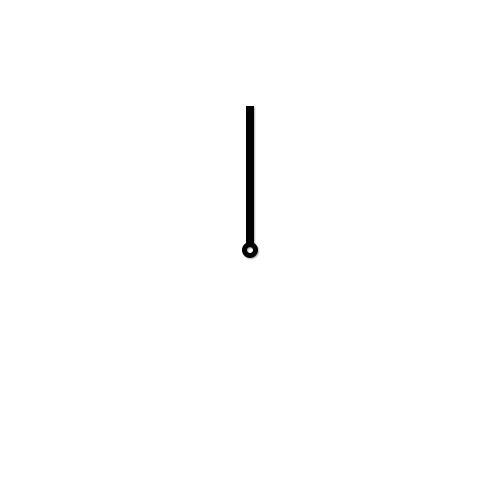

Alarms
Settings
Time Scale =
1
Digital
Analog
Continuous
Discrete
12-h
24-h
Instant Dismiss
Show Challenge
Default Snooze Amount
min
S
M
T
W
T
F
S
:
:
 
Dismiss Alarm
Snooze
Set Alarm
Hour
Minute
S
M
T
W
T
F
S
Options:
Label:
Alarm Tone:
Default
Tone 1
Tone 2
Tone 3
Snooze Time (0 = use default)
Set Alarm
Cancel